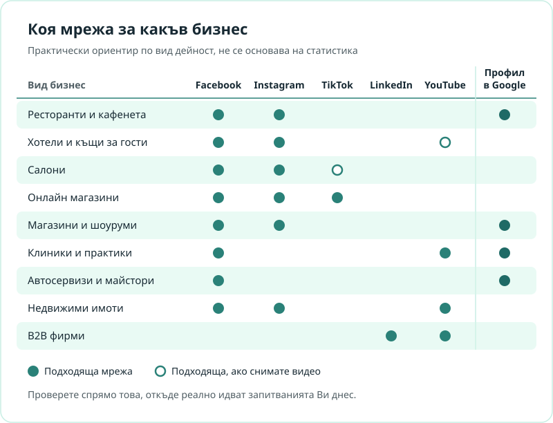

Съвети
Социални мрежи за малкия бизнес: коя мрежа за какво
Малкият бизнес обикновено има нужда от една или две социални мрежи, избрани според това какво продава и кои са клиентите му. Ще разберете, откъде да започнете и как да поддържате профилите си редовно, без да им отделяте повече време, отколкото имате. Разгледани са Facebook, Instagram, TikTok, LinkedIn и YouTube, както и профилът на бизнеса в Google. Той не е социална мрежа, но за много фирми работи заедно със социалните профили.
Обновено
Кои социални мрежи са подходящи за малък бизнес?
Всяка мрежа е създадена за различен вид съдържание и служи на бизнеса по различен начин. Изборът става по-лесен, когато знаете, за какво е всяка от тях и какво можете да публикувате Вие.
- Facebook. Предлага страници на бизнеси, публикации, събития, групи и съобщения през Messenger и е подходящ за новини и въпроси от клиенти.
- Instagram. Събира снимки, кратки видеа и истории и е подходящ, когато продуктът или услугата се показват добре в изображения.
- TikTok. Работи с кратки вертикални видеа и е подходящ, ако можете редовно да снимате работата си, продуктите или отговори на чести въпроси.
- LinkedIn. Това е професионална мрежа, подходяща за фирми, които продават на други фирми, за набиране на служители и за експертни публикации.
- YouTube. Платформата за видео приема и по-дълги видеа и е подходяща за демонстрации, инструкции и обяснения, които клиентите търсят и гледат по-късно.
Не е нужно да присъствате във всяка от тези мрежи, за да Ви намират клиентите. За повечето малки фирми една или две от тях, поддържани редовно, са достатъчно начало.
Социална мрежа ли е профилът на бизнеса в Google?
Профилът в Google не е социална мрежа, но за бизнес с адрес или с район на обслужване той често работи заедно със социалните профили. Чрез Google Business Profile фирмата управлява, как изглежда в Google Търсене и Google Maps. Според помощния център на Google за използването на профила не се взима такса.
В профила поддържате работното време, сайта, телефона и адреса, качвате снимки и отговаряте на оценките и коментарите на клиентите. Когато някой търси ресторант, сервиз или салон наблизо, той вижда тази информация, преди да стигне до социалните Ви профили. Затова е добре данните в Google и в социалните мрежи да съвпадат.
Коя мрежа е подходяща за Вашия вид бизнес?
Насоките по-долу са практически ориентир по вид дейност и не се основават на статистика. Проверете ги спрямо това, откъде реално идват запитванията Ви днес и къде клиентите вече Ви търсят.

- Ресторанти и кафенета. Обикновено се използват Instagram и Facebook за менюто, събитията и работното време, заедно с актуален профил в Google.
- Хотели и къщи за гости. Instagram и Facebook показват мястото и околността, а YouTube е подходящ, ако имате видео разходка из обекта.
- Салони. Instagram показва резултатите от работата, Facebook служи за въпроси и записвания, а TikTok е подходящ, ако снимате процеса.
- Онлайн магазини. Instagram и Facebook представят продуктите, а TikTok е подходящ за кратки видеа с продукта в употреба.
- Магазини и шоуруми. Facebook и Instagram показват новите стоки, а профилът в Google дава адреса и работното време.
- Клиники и практики. Facebook е за новини и въпроси, YouTube за обяснения на процедурите, а профилът в Google за адреса и часовете.
- Автосервизи и майстори. Обикновено се започва с профила в Google и Facebook, а кратки видеа от работата можете да добавите, ако имате време да ги снимате.
- Недвижими имоти. Instagram и Facebook са подходящи за обяви със снимки, а YouTube за видео огледи на имотите.
- B2B фирми. LinkedIn е за профила на компанията и експертните публикации, а YouTube за демонстрации на продукта.
Примерен сценарий, не данни от конкретен клиент: малка сладкарница започва само с Instagram и профила си в Google. Тортите ѝ изглеждат добре на снимка, а поръчките идват предимно от хора, които живеят или работят наблизо. Facebook го добавя по-късно, когато публикациите в Instagram вече излизат редовно.
Как да изберете една или две мрежи?
Един или два профила, които се обновяват, обикновено работят по-добре от много профили, в които последната публикация е отпреди месеци. Изборът зависи от това, къде са клиентите Ви и какво съдържание можете да създавате редовно.
- Помислете, откъде идват запитванията Ви сега, и попитайте няколко редовни клиента, къде Ви следят.
- Преценете, какво можете да подготвяте редовно, например всяка седмица: снимки, кратки видеа или текстове.
- Изберете мрежата, която отговаря и на двата въпроса, и добавете втора едва когато първата се поддържа редовно.
- Ако клиентите идват при Вас на място, поддържайте актуален и профила си в Google.
Ако се колебаете между две мрежи, започнете с тази, в която вече имате последователи или получавате съобщения. Там вече има хора, които познават бизнеса Ви и могат да видят новите публикации.
Как да поддържате профилите, без да губите много време?
Редовността, която можете да спазвате, е по-важна от определен брой публикации. Затова изберете ритъм, който е реалистичен за Вас, и го пазете дори в натоварените седмици.
- Подгответе план за месеца с теми: продукти, екип, чести въпроси и сезонни новини.
- Правете няколко снимки или кратки видеа всеки път, когато работите по интересна поръчка.
- Използвайте една снимка или едно видео в повече от една мрежа, с текст, пригоден за всяка от тях.
- Отговаряйте на съобщенията и на коментарите, които другите клиенти също виждат.
- В края на всеки месец проверявайте, кои публикации са довели до запитвания.
Когато нямате време за това, Xtra AI може да поеме публикациите със собствен инструмент за съдържание. Инструментът подготвя текста и изображението на всяка публикация и я публикува по график, след като я одобрите. Можете да получавате и брандирани визии и рекламни материали всеки месец. Повече за услугата вижте на страницата за поддръжката на профилите и месечните криейтиви.
Каква е разликата между публикациите и рекламата?
Публикациите са съдържанието, което споделяте в профила си, без да плащате на платформата за показването му. Платената реклама е отделна услуга, при която плащате, за да се покаже съобщението Ви и на хора извън последователите Ви.
Двете обикновено се допълват: рекламата води нови хора към профила, а редовните публикации им показват, че бизнесът е активен. Рекламата обаче изисква отделен бюджет, а кампаниите трябва да се настройват внимателно и резултатите им да се проследяват редовно.
При Xtra AI тази работа се води от истински маркетинг специалист, който планира, пуска и следи кампаниите и отчита резултатите с цифри. Как изглежда това, вижте на страницата за кампаниите във Facebook и Instagram.
Откъде да започнете?
Ако не сте сигурни, коя мрежа е подходяща за Вас или колко време Ви отнемат профилите сега, започнете с безплатната диагностика. В нея избирате вида на бизнеса си, отбелязвате проблемите, които имате, и виждате ориентировъчно, колко часа седмично губите.
Диагностиката включва и 30-минутен разговор, след който получавате оферта с приоритизирани решения и ясни еднократни цени. В офертата уточняваме, в кои мрежи да публикувате и колко често, според вида на Вашия бизнес. Диагностиката не Ви задължава с нищо, дори след като получите офертата.
Често задавани въпроси
Кои са социалните мрежи, които малкият бизнес обикновено разглежда?
Малкият бизнес обикновено избира между Facebook, Instagram, TikTok, LinkedIn и YouTube. Facebook и Instagram служат за публикации, снимки и съобщения, TikTok за кратки видеа, LinkedIn е професионална мрежа, а YouTube е платформа за видео.
Трябва ли бизнесът да има профил във всяка социална мрежа?
Обикновено не е нужно. Една или две мрежи, в които са клиентите Ви и които можете да поддържате редовно, са по-добро начало от много профили без нови публикации.
Колко често трябва да публикува малкият бизнес?
Няма една цифра, подходяща за всеки бизнес. По-важно е да изберете ритъм, който можете да спазвате всеки месец, и да отговаряте на коментарите и съобщенията.
Профилът в Google социална мрежа ли е?
Не, Google Business Profile управлява, как бизнесът изглежда в Google Търсене и Google Maps. Google не взима такса за него, а за бизнес с адрес той често работи заедно със социалните профили.
Може ли Xtra AI да поддържа профилите ни в социалните мрежи?
Да, Xtra AI използва собствен инструмент за съдържание, който подготвя публикации с текст и изображение и ги публикува по график. Получавате всяка публикация за одобрение, а мрежите и честотата се уточняват в офертата след безплатната диагностика.
Колко хора в България използват социалните мрежи?
Според НСИ и Eurostat през 2025 г. около 71% от хората в България на възраст от 16 до 74 години са участвали в социалните мрежи. Данните обхващат участието в социалните мрежи като цяло и не са разбити по отделни платформи.
Свързани услуги
- Социални мрежи и криейтивиПубликации по график след Вашето одобрение, брандирани криейтиви всеки месец и актуален Google профил.Научете повече
- Реклама във Facebook и InstagramРеален специалист планира, пуска и следи рекламите Ви във Facebook и Instagram и Ви отчита резултатите с конкретни числа.Научете повече
- Безплатна диагностикаОтбележете ситуациите, които познавате от своя бизнес, и вижте ориентировъчно колко часа седмично отнемат.Научете повече
Първата стъпка е безплатна
Диагностиката не Ви обвързва с нищо. Показваме Ви точно какво можем да поправим и колко ще струва.